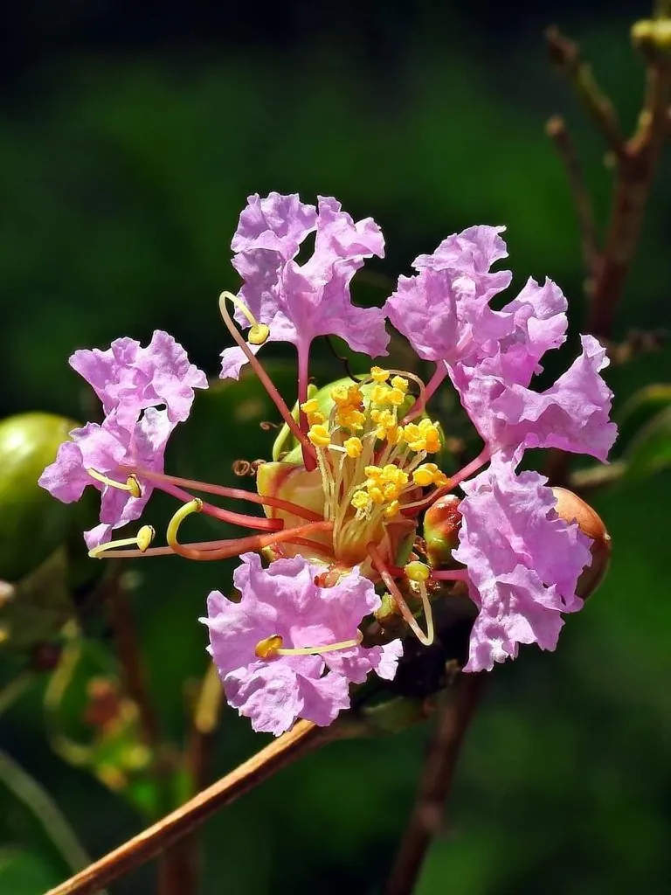

灌木与花木 · 植物界
紫薇 Lagerstroemia indica

夏季开花的花木，树皮光滑如无皮，花期长达百日，故又称“百日红”，是江南庭院常见的观赏灌木或小乔木。
- 分类
- 门被子植物门纲木兰纲目桃金娘目科千屈菜科属紫薇属
- 栖息环境
- 海拔 1000 米以下的丘陵、平原与庭院，喜光喜温暖，耐旱
- 地理分布
- 原产中国长江流域及华东、华中地区，南北各地广泛栽培
- 保护级别
- 暂无评估；中国未列入国家重点保护野生植物名录
物种志
紫薇为落叶灌木或小乔木，高可达 7 m，树皮灰绿色或黄褐色、光滑，片状剥落后露出新皮，故有“无皮树”之称；小枝四棱形。叶片互生或近对生，椭圆形或倒卵形，全缘。花期 6–9 月，圆锥花序顶生，花径 2–3 cm，花瓣皱缩如皱纸，有紫红、粉红、白色等，花期长达百日；蒴果椭圆形，成熟时开裂，种子带翅。
紫薇原产中国长江流域及华东、华中地区，喜光、喜温暖湿润，耐旱、耐修剪，适宜深厚肥沃、排水良好的土壤。因花期长、花色艳丽，常被种植于庭院、公园与行道旁；轻挠树干时整株枝叶会随之微微颤动，故民间称其“痒痒树”。树皮与根可入药，有活血止血之效；木材坚硬，可制器具。紫薇寓意“紫气东来”，是中国传统庭院中常见的吉祥花木。
形态与习性
- 株高可达 7 m，树皮光滑、片状剥落
- 花期6–9 月，花期约 100 天
- 果期9–11 月，蒴果椭圆形
- 光照喜光，稍耐阴
- 水分耐旱，怕积水
- 土壤深厚肥沃、排水良好的壤土
- 主要用途庭院观赏、行道树、树皮与根入药
趣味知识
- 紫薇花期可长达百日，因此又被称为“百日红”。
- 紫薇树皮光滑、片状剥落，露出青灰色新皮，看起来像没有树皮。
- 轻挠紫薇树干，整株枝叶会微微颤动，因此民间称它“痒痒树”。
- 紫薇寓意“紫气东来”，是中国传统庭院中的吉祥花木。